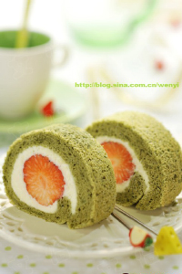
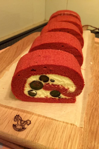
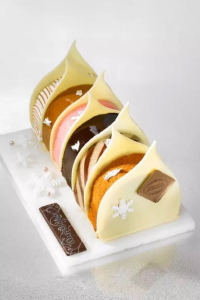
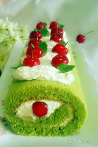
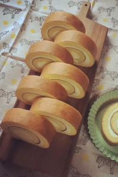
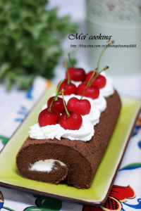

胡永胜
个人主页
个人简介
最爱美食
随笔日记
最爱美食 / Favorite food
不管是否情愿，生活总在催促我们迈步向前，人们整装，启程，跋涉，落脚，停在哪里，哪里就会燃起灶火。从个体生命的迁徙，到食材的交流运输，从烹调方法的改变，到人生命运的流转，人和食物的匆匆脚步，从来不曾停歇。 譬如甜品，明知无益，我们还是想吃。看到这⼀天阳光普照，明知要工作，我们还是会溜出去享受⼀顿美好的下午茶。明知许多事情都会改变，我们依然相信他许下的、像甜品⼀样诱人的承诺。 爱情里的海誓山盟不过是正餐以外的小吃，我们觉得失望，因为我们被爱时以为这些山盟海誓不过是正餐，受伤害时以为它是毒药，却从来未察觉，承诺，不过是甜品。






淡淡时光，纯真的情怀。喜欢纯真的眼睛，那是一泓清敬的泉水，源自洁争，一尘不染:喜欢纯真的笑容，那是一束灿烂的花朵，源自内心，自然清爽;喜欢纯真的心灵，那是一页质洁的信箋，源自善良，质朴无暇。蓦然回首，留给自己的往往是最本质的东西，最纯真的情怀!
生活得更好，其实是为了自己!每一天，我们朝着太阳微笑，朝着太阳成长，做一个温暖的人，一个不卑不亢的人，享受生活。